教學1 開始使用Git
安裝Git
在進入正式教學之前，我們需要先建構使用Git的環境。您可以選擇Windows(GUI)、Mac(GUI)、或命令行(主控台)作為安裝Git的環境。下面將根據各個環境進行講解。
如果您是開發者或是習慣使用主控台(命令列)，您可以試著用命令列來操作Git。
Windows
在這裡要介紹開放原始碼的Git程式，TortoiseGit。也會介紹如何把選單中文化的語言包。
http://code.google.com/p/tortoisegit/
Tips
要使用TortoiseGit，首先要安裝msysgit。請從以下的網站下載安裝程式並執行安裝。
http://msysgit.github.io/
接著下載TortoiseGit的安裝程式和語言包（ Language Packs）。有32bit和64bit的版本可供下載，請選擇與您的windows系統相同的版本下載。
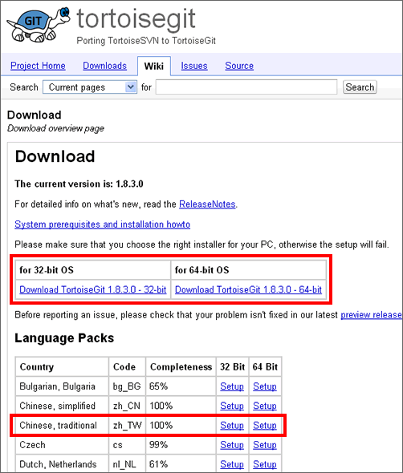
點兩下下載的安裝程式。顯示以下畫面後，點一下Next。
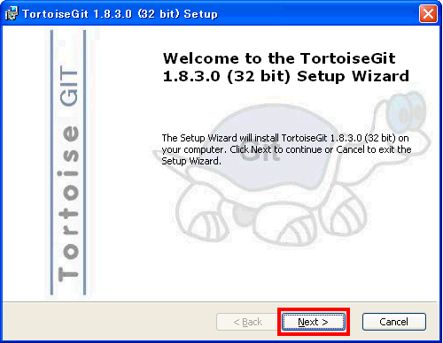
點擊Next按鈕。
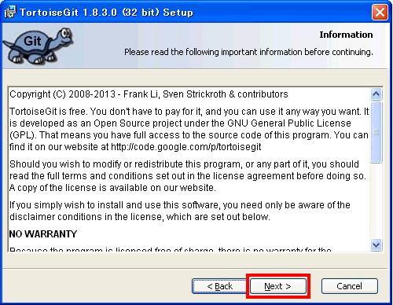
選擇TortoiseGitPLink，點一下Next。
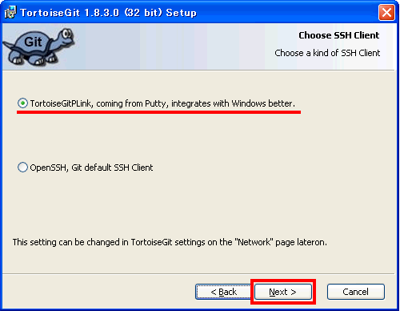
繼續點一下Next。
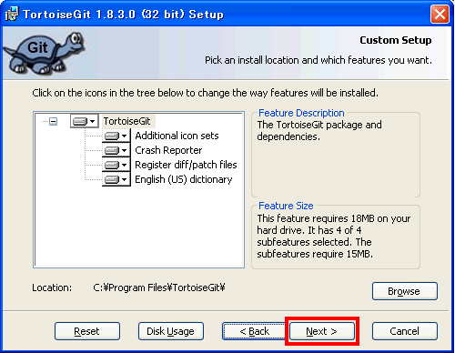
點一下Install。
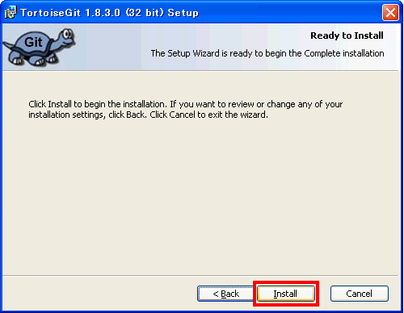
開始安裝。如果出現用戶認證，請認證後再繼續安裝。
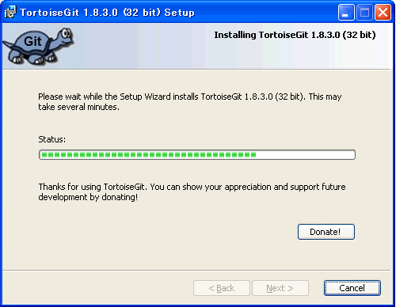
安裝完畢。點一下Finish結束。
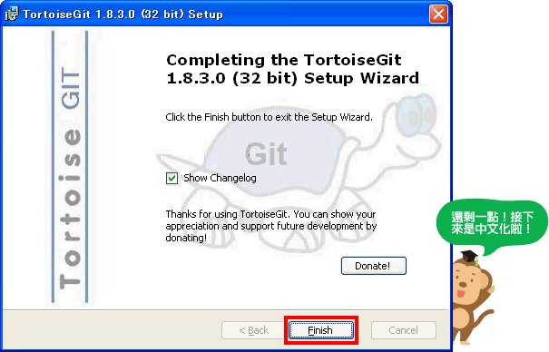
接下來進行中文化。從語言包下載Chinese（traditional），點兩下以啟動，接著點擊Next按鈕。
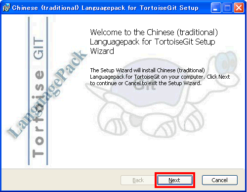
開始安裝。如果出現用戶認證，請認證後再繼續安裝。
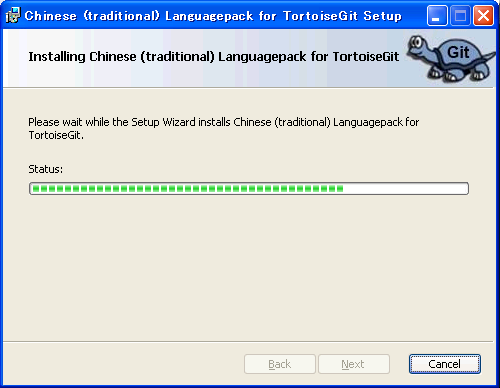
安裝完畢。點一下Finish結束。
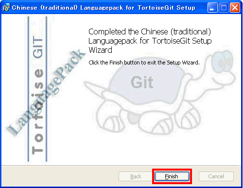
在桌面上任意一個地方按右鍵顯示選單，選單裡會有新增Git選項，請點一下 「TortoiseGit」 > 「Settings」
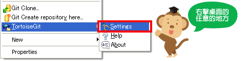
會出現以下設定畫面，在「General」頁面的「Language」裡選擇中文然後點擊「OK」。
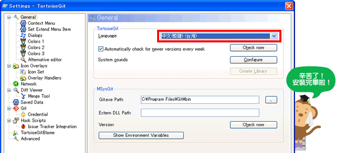
這樣就完成了安裝和中文化設定。